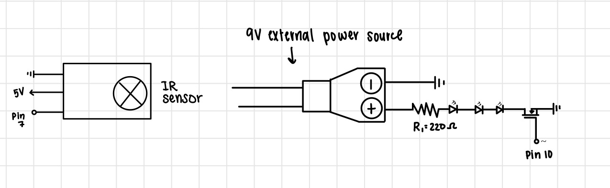
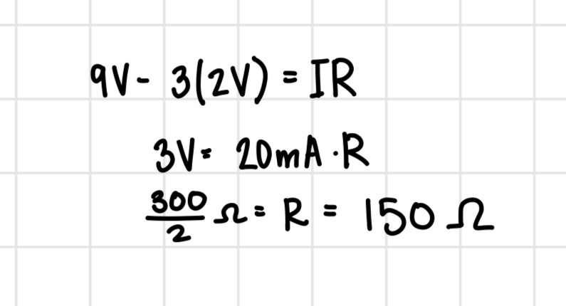

This is an image of my final circuit built on a breadboard and connected to the Arduino and to the 9V external power supply.
The 3 LEDs are in series with one resistor. They are connected, through the resistor, to the 9V power supply, and
the transistor is connected to the ground of the power supply. The transistor is also connected to pin 10 of the Arduino.
The IR receiver is connected to pin 7 of the Arduino, and the ground and 5V of the Arduino.

Here is the schematic diagram for my circuit.
The IR receiver was its own branch connected to the Arduino.
The 3 red LEDs were in series with a resistor, and that branch was connected to the 9V power supply and the transistor.
The transistor was connected to the series of leds, to a digital pin, and to the ground of the power supply.

To choose the right resistors for each branch, I started by measuring the voltage drop through
each LED. The red LEDs have a drop of approximately 2 volts each (6 volts total). The external source provided 9 volts
and I wanted a current of 20 mA. Then I used Ohm's Law (V = IR) to calculate the resistance
needed. The result was a 150 ohm resistor. To ensure that my the current would be 20mA or lower, I rounded up to the closest
resistor value in our kit which is a 220 ohm resistor.

Here is a GIF of the final circuit. When the power button on the remote is pressed, the IR sensor detects
the signal and changes the system value from either on to off. If the system is on, the transistor is turned on,
which allows power to flow to the LEDs, turning them on. If the system is off, the transistor is turned off, which
stops power from flowing to the LEDs, keeping them off.
1: These are the datasheets for the n-mosfet transistor: DMT6009LCTL, IRLZ44NL, P30N06LE. Read the text on your mosfet to see
which one you have. For your mosfet, what is the absolute maximum amount of current between pins 2 and 3?
The mosfet I used is the IRLZ44NL. According to its datasheet, the absolute maximum current between pins 2 and 3 is 47A
2: Draw a schematic for a circuit with using at least your arduino, a DC motor, a flyback diode, and capacitors between power
and ground. Find parts with datasheets you could use for each of these schematic components.
33: Here is the datasheet for the L293D chip: https://www.ti.com/product/L293DLinks. Draw a schematic using at least your
arduino, this chip, and two motors. Write (pseudo) code that shows how you would move the motors both forward, both back, then
one forward one back, and one back then forward.
4. AI Use
I did not use AI when completing this assignment.
Arduino Code
#include //include the IRremote library
const int RECV_PIN = 7; //initiate the IR receiver pin as 7
const int transistor = 10; //initiate transistor to pin 10
IRrecv irrecv(RECV_PIN); // initialize IR object for detecting IR signals
decode_results results; // holds IR data
bool systemOn = false; //intiate system on value as false
void setup() {
Serial.begin(9600); //intiate serial
irrecv.enableIRIn(); //function detecting values
irrecv.blink13(true); //function for visually knowing when IR values when detected
pinMode(transistor, OUTPUT); // declare transistor led as an output
}
void loop() {
if(irrecv.decode(&results)){ //checks if a signal has been received and decoded
if (results.value == 0xFFA25D) { // If the received value is the power button
systemOn = !systemOn; //change the value of system on to the opposite of the current value
if (systemOn) { //if the system is on
analogWrite(transistor, 255); //turn the LED on high
Serial.println("SYSTEM ON"); //print System On
} else { //if the system is not on,
analogWrite(transistor, 0); //turn LED off
Serial.println("SYSTEM OFF"); //print System Off
}
}
irrecv.resume(); //continue receiving values
}
}